Общие проблемы человека: Здоровье, Работа, Дом, Семья...Например, закрылись заводы Детройта и культурные объекты запустели (и в России теперь есть умирающие города)
Церковь св. Кирилла и Мефодия 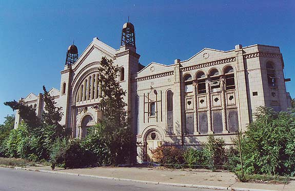 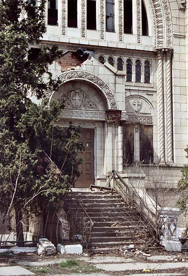 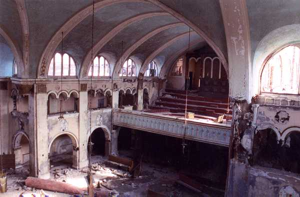 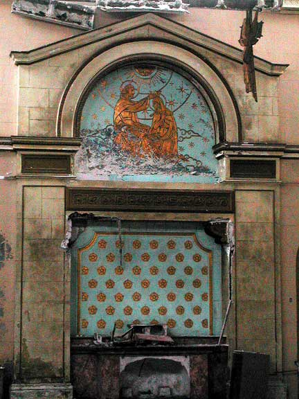 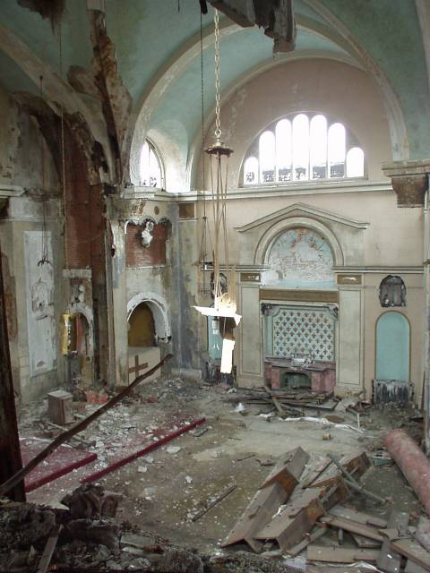 Англиканская церковь 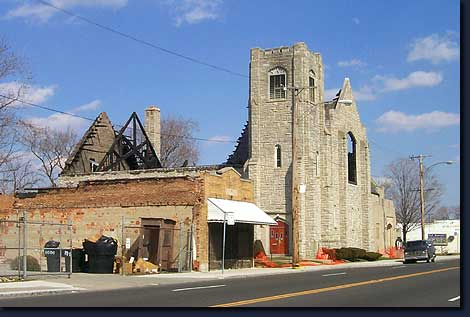 Баптистская церковь 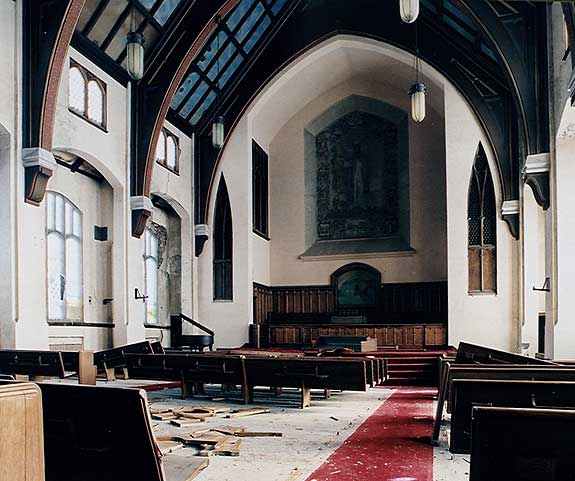 Храм 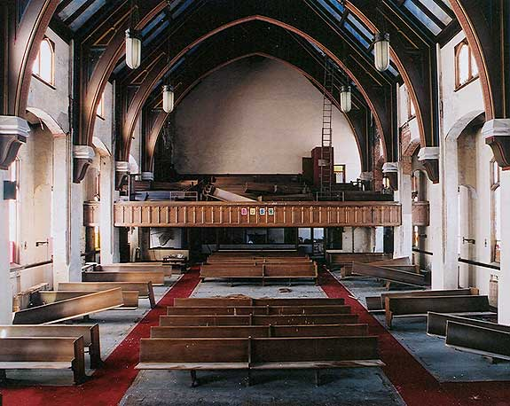 Школа при церкви 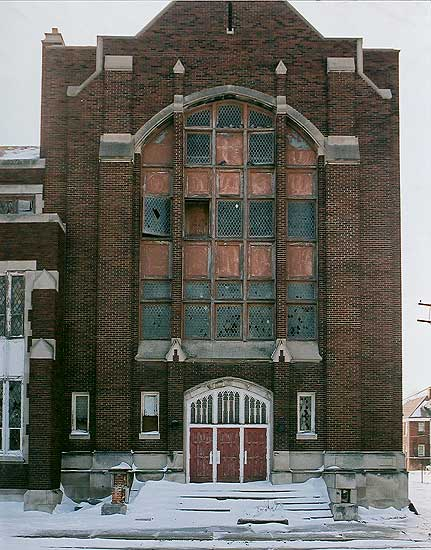 Школьный спортзал 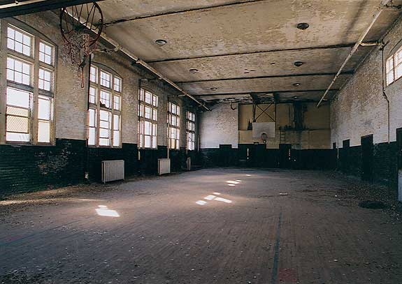 Завод Студебеккера 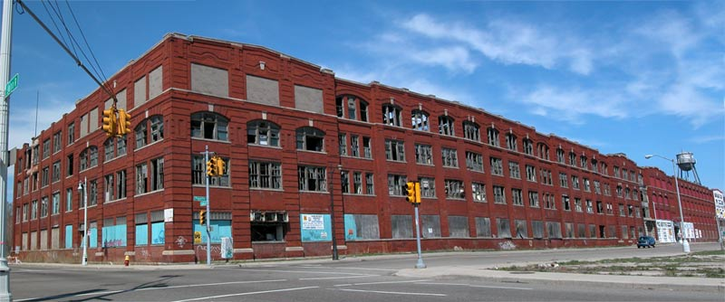 Завод Паккарда 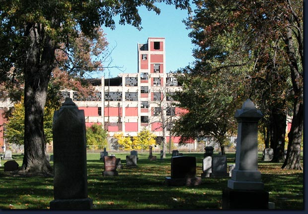 |